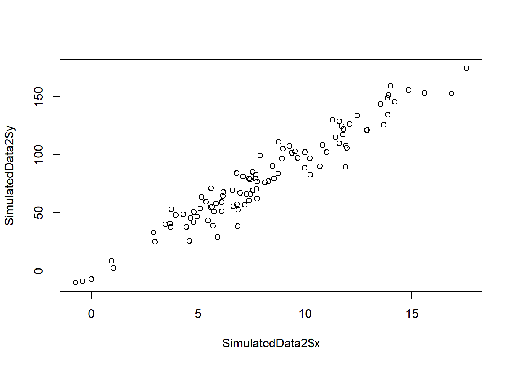
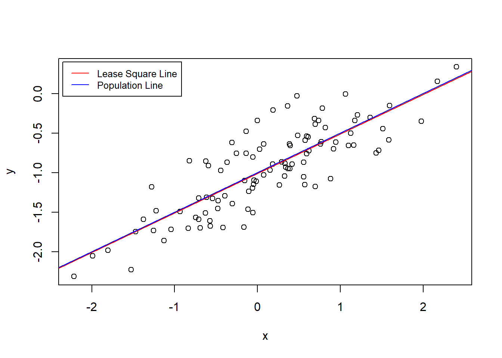
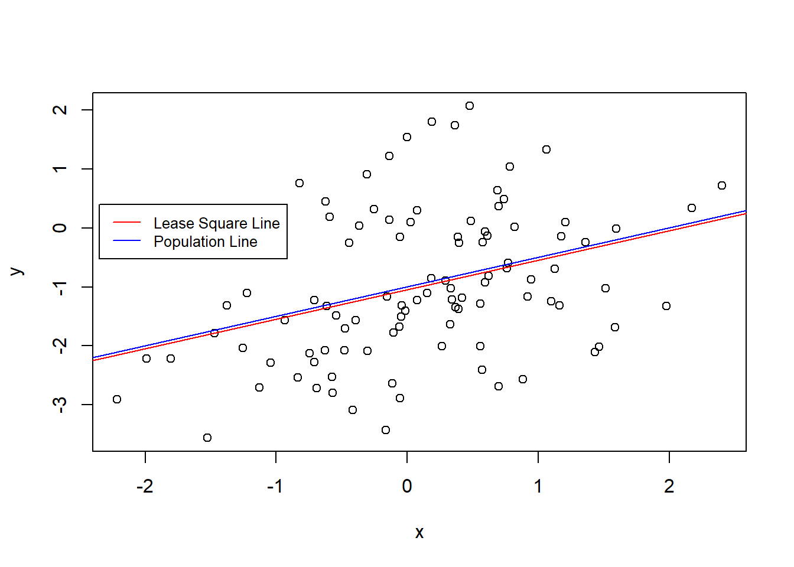
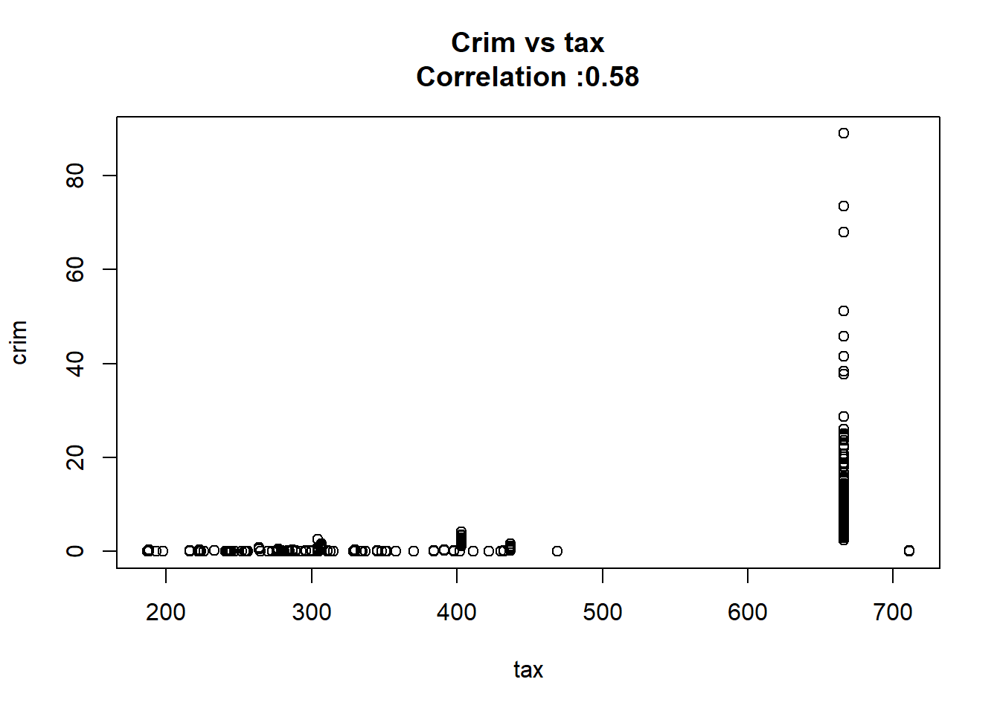
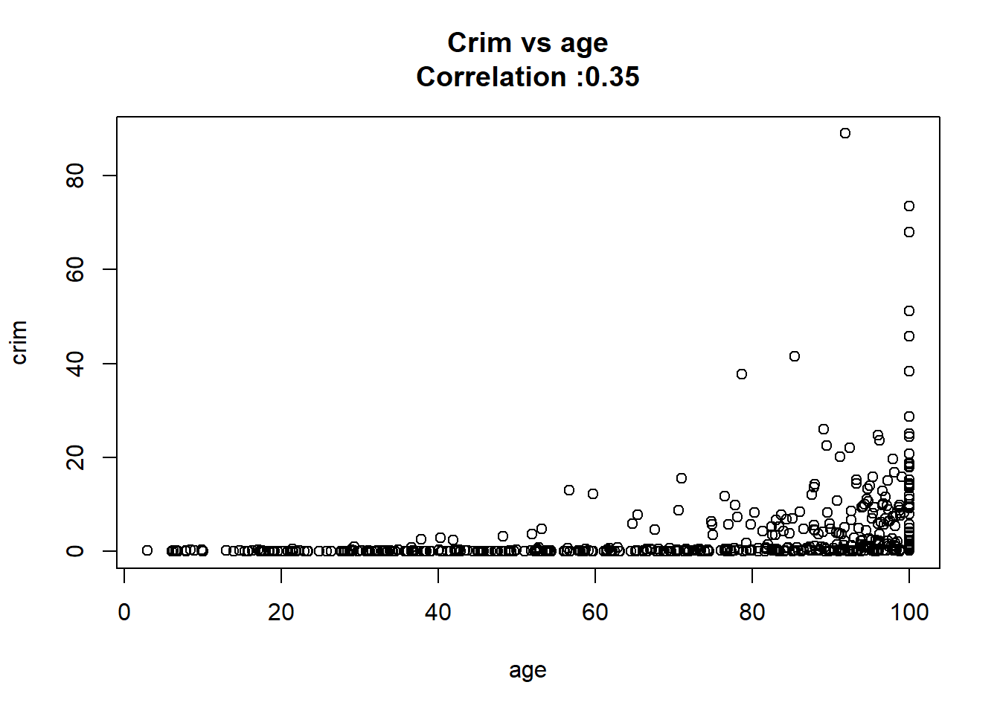

Call:
lm(formula = mpg ~ horsepower, data = Auto)
Residuals:
Min 1Q Median 3Q Max
-13.5710 -3.2592 -0.3435 2.7630 16.9240
Coefficients:
Estimate Std. Error t value Pr(>|t|)
(Intercept) 39.935861 0.717499 55.66 <2e-16 ***
horsepower -0.157845 0.006446 -24.49 <2e-16 ***
---
Signif. codes: 0 '***' 0.001 '**' 0.01 '*' 0.05 '.' 0.1 ' ' 1
Residual standard error: 4.906 on 390 degrees of freedom
Multiple R-squared: 0.6059, Adjusted R-squared: 0.6049
F-statistic: 599.7 on 1 and 390 DF, p-value: < 2.2e-1603 - Linear Regression
Conceptual
1
1. Describe the null hypotheses to which the p-values given in Table 3.4 correspond. Explain what conclusions you can draw based on these p-values. Your explanation should be phrased in terms of sales, TV, radio, and newspaper, rather than in terms of the coefficients of the linear model.
- Null hypotheses for each predictor each coefficient is 0. We can see in the table that we can reject the null hypotheses for TV and radio but there isn’t enough evidence to reject the null hypotheses for newspaper.
2. Carefully explain the differences between the KNN classifier and KNN regression methods.
- The classifier assigns classes based on the most often class of the closest \(K\) elements, on the other hand the regression estimate each value taking the mean of the closest \(K\) elements.
3. Suppose we have a data set with five predictors to predict the starting salary after graduation (in thousands of dollars) and after using least squares we fitted the next model:
| Variable | Coefficient |
|---|---|
| Level (High School) | \(\hat{\beta}_{0} = 50\) |
| \(X_{1}\) = GPA | \(\hat{\beta}_{1} = 20\) |
| \(X_{2}\) = IQ | \(\hat{\beta}_{2} = 0.07\) |
| \(X_{3}\) = Level (College) | \(\hat{\beta}_{3} = 35\) |
| \(X_{4}\) = Interaction between GPA and IQ | \(\hat{\beta}_{4} = 0.01\) |
| \(X_{5}\) = Interaction between GPA and Level | \(\hat{\beta}_{5} = −10\) |
Which answer is correct, and why?
- Based on this information we can say that:
For a fixed value of IQ and GPA, college graduates earn more, on average, than high school graduate.
- As High School students earn on average \(\hat{\beta}_{0} = 50\) College students earn |\(\hat{\beta}_{0} + \hat{\beta}_{3} = 85\)
(A) Predict the salary of a college graduate with IQ of 110 and a GPA of 4.0.
\[ \begin{split} \hat{Y} & = 35 + 20 (4) + 0.07 (110) + 35 + 0.01(4)(110) - 10 (4) \\ & = 122.1 \end{split} \]
- True or false: Since the coefficient for the GPA/IQ interaction term is very small, there is very little evidence of an interaction effect. Justify your answer.
FALSE, we can not make conclusions about the significance of any tern about checking the the standard error of each term. The coefficient might small because the IQ has very high values if we contrast the GPA ones.
- I collect a set of data (n = 100 observations) containing a single predictor and a quantitative response. I then fit a linear regression model to the data, as well as a separate cubic regression, i.e. \(Y = \beta_{0} + \beta_{1}x + \beta_{2}x^2 + \beta_{3}x^3 + \epsilon\).
- Suppose that the true relationship between X and Y is linear, i.e. \(Y = \beta_{0} + \beta_{1}x + \epsilon\). Consider the training residual sum of squares (RSS) for the linear regression, and also the training RSS for the cubic regression. Would we expect one to be lower than the other, would we expect them to be the same, or is there not enough information to tell? Justify your answer.
As the training RSS always gets lower as we increase the flexibility the cubic regression would have a lower RSS.
- Answer (a) using test rather than training RSS.
The linear regression would have a lower test RSS, as it reduces de scare bias of the model.
- Suppose that the true relationship between X and Y is not linear, but we don’t know how far it is from linear. Consider the training RSS for the linear regression, and also the training RSS for the cubic regression. Would we expect one to be lower than the other, would we expect them to be the same, or is there not enough information to tell? Justify your answer.
As the training RSS always gets lower as we increase the flexibility the cubic regression would have a lower RSS.
- Answer (c) using test rather than training RSS.
The cubic regression would have a lower test RSS, as it reduces de scare bias of the model.
- Consider the fitted values that result from performing linear regression without an intercept. In this setting, the \(i\)th fitted value takes the form.
\[ \hat{y}_{i} = x_{i}\hat{\beta} \]
Where
\[ \hat{\beta}= \left( \sum_{i=1}^{n}{x_{i}y_{i}} \right) / \left( \sum_{i'=1}^{n}{x_{i'}^2} \right) \]
- Show that we can write
\[ \hat{y}_{i} = \sum_{i'=1}^{n}{a_{i'}y_{i'}} \] I am not sure about this execise as I don’t understand the difference between \(i\) and \(i'\).
\[ \begin{split} \sum_{i'=1}^{n}{a_{i'}y_{i'}} & = x_{i}\hat{\beta} \\ \sum_{i'=1}^{n}{a_{i'}y_{i'}} & = x_{i}\frac{\sum_{i=1}^{n}{x_{i}y_{i}}} {\sum_{i'=1}^{n}{x_{i'}^2} } \\ \sum_{i'=1}^{n}{a_{i'}} \sum_{i'=1}^{n}{y_{i'}} & = \frac{x_{i}\sum_{i=1}^{n}{x_{i}}} {\sum_{i'=1}^{n}{x_{i'}^2} } \sum_{i=1}^{n} {y_{i}} \\ \sum_{i'=1}^{n}{a_{i'}} & = \frac{x_{i}\sum_{i=1}^{n}{x_{i}}} {\sum_{i'=1}^{n}{x_{i'}^2} } \end{split} \]
- Using (3.4), argue that in the case of simple linear regression, the least squares line always passes through the point \((\overline{x},\overline{x})\).
As you can see bellow the intercept it’s the responsible for that property.
\[ \begin{split} \hat{y} & = \left( \hat{\beta}_{0} \right) + \hat{\beta}_{1} \overline{x} \\ \hat{y} & = \overline{y} - \hat{\beta}_{1}\overline{x} + \hat{\beta}_{1} \overline{x} \\ \hat{y} & = \overline{y} \end{split} \]
Applied
- This question involves the use of simple linear regression on the Auto data set.
- Use the lm() function to perform a simple linear regression with mpg as the response and horsepower as the predictor. Use the summary() function to print the results. Comment on the output.
As we see the regression p-value is much lower than 0.05 and we can reject the null hypotheses to conclude that there is a strong relationship between the response en the predictor. The coefficient of horsepower is negative, so we know that as the predictor increase the response decrease.
- What is the predicted mpg associated with a horsepower of 98? What are the associated 95 % confidence and prediction intervals.
predict(AutoSimpleModel, newdata = data.frame(horsepower = 98), interval = "confidence") fit lwr upr
1 24.46708 23.97308 24.96108predict(AutoSimpleModel, newdata = data.frame(horsepower = 98), interval = "prediction") fit lwr upr
1 24.46708 14.8094 34.12476- Plot the response and the predictor. Use the abline() function to display the least squares regression line.

- Use the plot() function to produce diagnostic plots of the least squares regression fit. Comment on any problems you see with the fit.
The Residuals vs Fitted shows that the relation is not linear and variance isn’t constant.
- This question involves the use of multiple linear regression on the Auto data set.
- Produce a scatterplot matrix which includes all of the variables in the data set.
pairs(Auto)
- Compute the matrix of correlations between the variables using the function cor(). You will need to exclude the name variable, which is qualitative.
mpg cylinders displacement horsepower weight
mpg 1.0000000 -0.7776175 -0.8051269 -0.7784268 -0.8322442
cylinders -0.7776175 1.0000000 0.9508233 0.8429834 0.8975273
displacement -0.8051269 0.9508233 1.0000000 0.8972570 0.9329944
horsepower -0.7784268 0.8429834 0.8972570 1.0000000 0.8645377
weight -0.8322442 0.8975273 0.9329944 0.8645377 1.0000000
acceleration 0.4233285 -0.5046834 -0.5438005 -0.6891955 -0.4168392
year 0.5805410 -0.3456474 -0.3698552 -0.4163615 -0.3091199
origin 0.5652088 -0.5689316 -0.6145351 -0.4551715 -0.5850054
acceleration year origin
mpg 0.4233285 0.5805410 0.5652088
cylinders -0.5046834 -0.3456474 -0.5689316
displacement -0.5438005 -0.3698552 -0.6145351
horsepower -0.6891955 -0.4163615 -0.4551715
weight -0.4168392 -0.3091199 -0.5850054
acceleration 1.0000000 0.2903161 0.2127458
year 0.2903161 1.0000000 0.1815277
origin 0.2127458 0.1815277 1.0000000- Use the lm() function to perform a multiple linear regression with mpg as the response and all other variables except name as the predictors. Use the summary() function to print the results. Comment on the output. For instance
AutoModelNoInteraction <-
lm(mpg ~ . -name, data = Auto)
AutoModelNoInteractionummary <-
summary(AutoModelNoInteraction)
AutoModelNoInteractionummary
Call:
lm(formula = mpg ~ . - name, data = Auto)
Residuals:
Min 1Q Median 3Q Max
-9.5903 -2.1565 -0.1169 1.8690 13.0604
Coefficients:
Estimate Std. Error t value Pr(>|t|)
(Intercept) -17.218435 4.644294 -3.707 0.00024 ***
cylinders -0.493376 0.323282 -1.526 0.12780
displacement 0.019896 0.007515 2.647 0.00844 **
horsepower -0.016951 0.013787 -1.230 0.21963
weight -0.006474 0.000652 -9.929 < 2e-16 ***
acceleration 0.080576 0.098845 0.815 0.41548
year 0.750773 0.050973 14.729 < 2e-16 ***
origin 1.426141 0.278136 5.127 4.67e-07 ***
---
Signif. codes: 0 '***' 0.001 '**' 0.01 '*' 0.05 '.' 0.1 ' ' 1
Residual standard error: 3.328 on 384 degrees of freedom
Multiple R-squared: 0.8215, Adjusted R-squared: 0.8182
F-statistic: 252.4 on 7 and 384 DF, p-value: < 2.2e-16- Is there a relationship between the predictors and the response?
As the regression p-value is bellow 0.05 we can reject the null hypothesis and conclude that at least one of the predictors have a relation with the response.
- Which predictors appear to have a statistically significant relationship to the response?
AutoModelNoInteractionummary |>
coefficients() |>
as.data.frame() |>
subset(`Pr(>|t|)` < 0.05) Estimate Std. Error t value Pr(>|t|)
(Intercept) -17.218434622 4.6442941494 -3.707438 2.401841e-04
displacement 0.019895644 0.0075150792 2.647430 8.444649e-03
weight -0.006474043 0.0006520478 -9.928787 7.874953e-21
year 0.750772678 0.0509731223 14.728795 3.055983e-39
origin 1.426140495 0.2781360924 5.127492 4.665681e-07- What does the coefficient for the year variable suggest?
It suggests that cars in average cars can drive 0.75 more miles per gallon every year.
-
Use the plot() function to produce diagnostic plots of the linear regression fit. Comment on any problems you see with the fit. Do the residual plots suggest any unusually large outliers? Does the leverage plot identify any observations with unusually high leverage?
- Non-linearity of the response-predictor relationships
- Non-constant variance
- High-leverage points

- Use the * and : symbols to fit linear regression models with interaction effects. Do any interactions appear to be statistically significant?
remove_rownames <- function(DF){
DF <- cbind(name = row.names(DF), DF)
rownames(DF) <- NULL
return(DF)
}
names(Auto) |>
setdiff(c("mpg","name")) |>
(\(x) c(x,
combn(x, m = 2,
FUN = \(y) paste0(y,collapse =":"))))() |>
paste0(collapse = " + ") |>
paste0("mpg ~ ", predictors = _) |>
lm(data = Auto) |>
summary() |>
coef() |>
as.data.frame() |>
remove_rownames() |>
subset(`Pr(>|t|)` < 0.05 | name == "year") name Estimate Std. Error t value Pr(>|t|)
3 displacement -0.478538689 0.189353429 -2.527225 0.011920695
6 acceleration -5.859173212 2.173621188 -2.695582 0.007353578
7 year 0.697430284 0.609670317 1.143947 0.253399572
8 origin -20.895570401 7.097090511 -2.944245 0.003445892
18 displacement:year 0.005933802 0.002390716 2.482019 0.013515633
27 acceleration:year 0.055621508 0.025581747 2.174265 0.030330641
28 acceleration:origin 0.458316099 0.156659694 2.925552 0.003654670- Try a few different transformations of the variables, such as \(\log{x}\), \(\sqrt{x}\), \(x^2\). Comment on your findings.
As we can see bellow we can explain 3% more of the variability by applying log to some variables.
library(data.table)
apply_fun_lm <- function(FUN,DF, trans_vars, remove_vars){
as.data.table(DF
)[, (trans_vars) := lapply(.SD, FUN), .SDcols = trans_vars
][, !remove_vars, with = FALSE
][, lm(mpg ~ . , data = .SD)] |>
summary() |>
(\(x) data.table(adj.r.squared = x$adj.r.squared,
sigma = x$sigma,
p.value = pf(x$fstatistic["value"],
x$fstatistic["numdf"],
x$fstatistic["dendf"],
lower.tail = FALSE)))()
}
data.table(function_name = c("original","log", "sqrt","x^2"),
function_list = list(\(x) x,log, sqrt, \(x) x^2)
)[, data :=
lapply(function_list,
FUN = apply_fun_lm,
DF = Auto,
trans_vars = c("displacement", "horsepower",
"weight", "acceleration"),
remove_vars = "name")
][, rbindlist(data) |> cbind(function_name, end = _)] function_name end.adj.r.squared end.sigma end.p.value
1: original 0.8182238 3.327682 2.037106e-139
2: log 0.8474528 3.048425 5.352738e-154
3: sqrt 0.8312704 3.206041 1.304165e-145
4: x^2 0.7986663 3.502124 6.372862e-131- This question should be answered using the Carseats data set.
- Fit a multiple regression model to predict Sales using Price, Urban, and US.
CarseatsModel <-
lm(Sales~Price+Urban+US, data = Carseats)
CarseatsModelSummary <-
summary(CarseatsModel)
CarseatsModelSummary
Call:
lm(formula = Sales ~ Price + Urban + US, data = Carseats)
Residuals:
Min 1Q Median 3Q Max
-6.9206 -1.6220 -0.0564 1.5786 7.0581
Coefficients:
Estimate Std. Error t value Pr(>|t|)
(Intercept) 13.043469 0.651012 20.036 < 2e-16 ***
Price -0.054459 0.005242 -10.389 < 2e-16 ***
UrbanYes -0.021916 0.271650 -0.081 0.936
USYes 1.200573 0.259042 4.635 4.86e-06 ***
---
Signif. codes: 0 '***' 0.001 '**' 0.01 '*' 0.05 '.' 0.1 ' ' 1
Residual standard error: 2.472 on 396 degrees of freedom
Multiple R-squared: 0.2393, Adjusted R-squared: 0.2335
F-statistic: 41.52 on 3 and 396 DF, p-value: < 2.2e-16- Provide an interpretation of each coefficient in the model. Be careful—some of the variables in the model are qualitative!
CarseatsInterationModel <-
lm(Sales~Price*Urban*US, data = Carseats)
CarseatsInterationModelSummary <-
summary(CarseatsInterationModel)
CarseatsInterationModelSummary
Call:
lm(formula = Sales ~ Price * Urban * US, data = Carseats)
Residuals:
Min 1Q Median 3Q Max
-6.7952 -1.6659 -0.0984 1.6119 7.2433
Coefficients:
Estimate Std. Error t value Pr(>|t|)
(Intercept) 13.456350 1.727210 7.791 6.03e-14 ***
Price -0.061657 0.014875 -4.145 4.17e-05 ***
UrbanYes -0.651545 2.071401 -0.315 0.753
USYes 2.049051 2.322591 0.882 0.378
Price:UrbanYes 0.010793 0.017796 0.606 0.545
Price:USYes -0.001567 0.019972 -0.078 0.937
UrbanYes:USYes -1.122034 2.759662 -0.407 0.685
Price:UrbanYes:USYes 0.001288 0.023619 0.055 0.957
---
Signif. codes: 0 '***' 0.001 '**' 0.01 '*' 0.05 '.' 0.1 ' ' 1
Residual standard error: 2.473 on 392 degrees of freedom
Multiple R-squared: 0.2467, Adjusted R-squared: 0.2333
F-statistic: 18.34 on 7 and 392 DF, p-value: < 2.2e-16- Write out the model in equation form, being careful to handle the qualitative variables properly.
coef(CarseatsInterationModel) |>
round(3) |>
(\(x) paste0(ifelse(x < 0, " - "," + "), abs(x)," \text{ ", names(x),"}"))() |>
sub(pattern = " \text{ (Intercept)}",replacement = "", fixed = TRUE) |>
paste0(collapse = "") |>
sub(pattern = "^ \\+ ", replacement = "") |>
sub(pattern = "^ - ", replacement = "") |>
paste0("hat{Y} = ", FUN = _)[1] "hat{Y} = 13.456 - 0.062 \text{ Price} - 0.652 \text{ UrbanYes} + 2.049 \text{ USYes} + 0.011 \text{ Price:UrbanYes} - 0.002 \text{ Price:USYes} - 1.122 \text{ UrbanYes:USYes} + 0.001 \text{ Price:UrbanYes:USYes}"\[ \begin{split} \hat{Sales} & = 13.456 - 0.062 \text{ Price} - 0.652 \text{ UrbanYes} \\ & \quad + 2.049 \text{ USYes} + 0.011 \text{ Price:UrbanYes} \\ & \quad - 0.002 \text{ Price:USYes} - 1.122 \text{ UrbanYes:USYes} \\ & \quad + 0.001 \text{ Price:UrbanYes:USYes} \end{split} \]
- For which of the predictors can you reject the null hypothesis H0 : βj = 0?
coef(CarseatsInterationModelSummary) |>
as.data.frame() |>
(\(DF) DF[DF$`Pr(>|t|)` < 0.05,])() Estimate Std. Error t value Pr(>|t|)
(Intercept) 13.45634952 1.72720976 7.790802 6.030364e-14
Price -0.06165717 0.01487479 -4.145079 4.165536e-05- On the basis of your response to the previous question, fit a smaller model that only uses the predictors for which there is evidence of association with the outcome.
CarseatsPriceModel <-
lm(Sales~Price, data = Carseats)
CarseatsPriceModelSummary <-
summary(CarseatsPriceModel)
CarseatsPriceModelSummary
Call:
lm(formula = Sales ~ Price, data = Carseats)
Residuals:
Min 1Q Median 3Q Max
-6.5224 -1.8442 -0.1459 1.6503 7.5108
Coefficients:
Estimate Std. Error t value Pr(>|t|)
(Intercept) 13.641915 0.632812 21.558 <2e-16 ***
Price -0.053073 0.005354 -9.912 <2e-16 ***
---
Signif. codes: 0 '***' 0.001 '**' 0.01 '*' 0.05 '.' 0.1 ' ' 1
Residual standard error: 2.532 on 398 degrees of freedom
Multiple R-squared: 0.198, Adjusted R-squared: 0.196
F-statistic: 98.25 on 1 and 398 DF, p-value: < 2.2e-16- How well do the models in (a) and (e) fit the data?
Model a fits better to the data with 0.23 against 0.2 of model e.
- Using the model from (e), obtain 95 % confidence intervals for the coefficient(s).
confint(CarseatsPriceModel, level = 0.95) 2.5 % 97.5 %
(Intercept) 12.3978438 14.88598655
Price -0.0635995 -0.04254653- Is there evidence of outliers or high leverage observations in the model from (e)?

There is a leverage point.
- In this problem we will investigate the t-statistic for the null hypothesis H0 : β = 0 in simple linear regression without an intercept. To begin, we generate a predictor x and a response y as follows.
set.seed(1)
x <- rnorm(100)
y <- 2*x+rnorm(100)
SimulatedData <- data.frame(x, y) - Perform a simple linear regression of y onto x, without an intercept. Report the coefficient estimate ˆβ, the standard error of this coefficient estimate, and the t-statistic and p-value associated with the null hypothesis H0 : β = 0. Comment on these results. (You can perform regression without an intercept using the command lm(y∼x+0).)
As we can see below we can reject the null hypothesis and conclude that y increases 1.99 for each unit of x explaining 78% of the variability.
Call:
lm(formula = y ~ x + 0, data = SimulatedData)
Residuals:
Min 1Q Median 3Q Max
-1.9154 -0.6472 -0.1771 0.5056 2.3109
Coefficients:
Estimate Std. Error t value Pr(>|t|)
x 1.9939 0.1065 18.73 <2e-16 ***
---
Signif. codes: 0 '***' 0.001 '**' 0.01 '*' 0.05 '.' 0.1 ' ' 1
Residual standard error: 0.9586 on 99 degrees of freedom
Multiple R-squared: 0.7798, Adjusted R-squared: 0.7776
F-statistic: 350.7 on 1 and 99 DF, p-value: < 2.2e-16- Now perform a simple linear regression of x onto y without an intercept, and report the coefficient estimate, its standard error, and the corresponding t-statistic and p-values associated with the null hypothesis H0 : β = 0. Comment on these results.
As we can see below we can reject the null hypothesis and conclude that x increases 0.39 for each unit of y explaining 78% of the variability.
Call:
lm(formula = x ~ y + 0, data = SimulatedData)
Residuals:
Min 1Q Median 3Q Max
-0.8699 -0.2368 0.1030 0.2858 0.8938
Coefficients:
Estimate Std. Error t value Pr(>|t|)
y 0.39111 0.02089 18.73 <2e-16 ***
---
Signif. codes: 0 '***' 0.001 '**' 0.01 '*' 0.05 '.' 0.1 ' ' 1
Residual standard error: 0.4246 on 99 degrees of freedom
Multiple R-squared: 0.7798, Adjusted R-squared: 0.7776
F-statistic: 350.7 on 1 and 99 DF, p-value: < 2.2e-16- What is the relationship between the results obtained in (a) and (b)?
y can explain x as well a x explains y.
- In R, show that when regression is performed with an intercept, the t-statistic for H0 : β1 = 0 is the same for the regression of y onto x as it is for the regression of x onto y.
As you can see below the t-statistic for \(\beta_{1}\) is t-statistic for both regressions is 18.56.
Call:
lm(formula = y ~ x, data = SimulatedData)
Residuals:
Min 1Q Median 3Q Max
-1.8768 -0.6138 -0.1395 0.5394 2.3462
Coefficients:
Estimate Std. Error t value Pr(>|t|)
(Intercept) -0.03769 0.09699 -0.389 0.698
x 1.99894 0.10773 18.556 <2e-16 ***
---
Signif. codes: 0 '***' 0.001 '**' 0.01 '*' 0.05 '.' 0.1 ' ' 1
Residual standard error: 0.9628 on 98 degrees of freedom
Multiple R-squared: 0.7784, Adjusted R-squared: 0.7762
F-statistic: 344.3 on 1 and 98 DF, p-value: < 2.2e-16
Call:
lm(formula = x ~ y, data = SimulatedData)
Residuals:
Min 1Q Median 3Q Max
-0.90848 -0.28101 0.06274 0.24570 0.85736
Coefficients:
Estimate Std. Error t value Pr(>|t|)
(Intercept) 0.03880 0.04266 0.91 0.365
y 0.38942 0.02099 18.56 <2e-16 ***
---
Signif. codes: 0 '***' 0.001 '**' 0.01 '*' 0.05 '.' 0.1 ' ' 1
Residual standard error: 0.4249 on 98 degrees of freedom
Multiple R-squared: 0.7784, Adjusted R-squared: 0.7762
F-statistic: 344.3 on 1 and 98 DF, p-value: < 2.2e-16- This problem involves simple linear regression without an intercept.
- Recall that the coefficient estimate β for the linear regression of Y onto X without an intercept is given by (3.38). Under what circumstance is the coefficient estimate for the regression of X onto Y the same as the coefficient estimate for the regression of Y onto X?
The coefficient would be different between y~x and x~y.
- Generate an example in R with n = 100 observations in which the coefficient estimate for the regression of X onto Y is different from the coefficient estimate for the regression of Y onto X.
set.seed(5)
SimulatedData2 <-
data.frame(x = rnorm(100, mean = 8, sd = 4))
set.seed(8)
SimulatedData2$y <-
10*SimulatedData2$x + rnorm(100, sd = 10)
plot(SimulatedData2$x, SimulatedData2$y)
Call:
lm(formula = y ~ x + 0, data = SimulatedData2)
Residuals:
Min 1Q Median 3Q Max
-29.7686 -6.8107 -0.3744 6.5070 24.3187
Coefficients:
Estimate Std. Error t value Pr(>|t|)
x 9.9363 0.1207 82.3 <2e-16 ***
---
Signif. codes: 0 '***' 0.001 '**' 0.01 '*' 0.05 '.' 0.1 ' ' 1
Residual standard error: 10.81 on 99 degrees of freedom
Multiple R-squared: 0.9856, Adjusted R-squared: 0.9854
F-statistic: 6774 on 1 and 99 DF, p-value: < 2.2e-16
Call:
lm(formula = x ~ y + 0, data = SimulatedData2)
Residuals:
Min 1Q Median 3Q Max
-2.2861 -0.5429 0.1264 0.7279 3.0421
Coefficients:
Estimate Std. Error t value Pr(>|t|)
y 0.099191 0.001205 82.3 <2e-16 ***
---
Signif. codes: 0 '***' 0.001 '**' 0.01 '*' 0.05 '.' 0.1 ' ' 1
Residual standard error: 1.08 on 99 degrees of freedom
Multiple R-squared: 0.9856, Adjusted R-squared: 0.9854
F-statistic: 6774 on 1 and 99 DF, p-value: < 2.2e-16- Generate an example in R with n = 100 observations in which the coefficient estimate for the regression of X onto Y is the same as the coefficient estimate for the regression of Y onto X.
set.seed(5)
SimulatedData3 <-
data.frame(x = rnorm(100, mean = 8, sd = 4))
set.seed(8)
SimulatedData3$y <-
SimulatedData3$x + rnorm(100, sd = 1)
plot(SimulatedData3$x, SimulatedData3$y)
Call:
lm(formula = y ~ x + 0, data = SimulatedData3)
Residuals:
Min 1Q Median 3Q Max
-2.97686 -0.68107 -0.03744 0.65070 2.43187
Coefficients:
Estimate Std. Error t value Pr(>|t|)
x 0.99363 0.01207 82.3 <2e-16 ***
---
Signif. codes: 0 '***' 0.001 '**' 0.01 '*' 0.05 '.' 0.1 ' ' 1
Residual standard error: 1.081 on 99 degrees of freedom
Multiple R-squared: 0.9856, Adjusted R-squared: 0.9854
F-statistic: 6774 on 1 and 99 DF, p-value: < 2.2e-16
Call:
lm(formula = x ~ y + 0, data = SimulatedData3)
Residuals:
Min 1Q Median 3Q Max
-2.2861 -0.5429 0.1264 0.7279 3.0421
Coefficients:
Estimate Std. Error t value Pr(>|t|)
y 0.99191 0.01205 82.3 <2e-16 ***
---
Signif. codes: 0 '***' 0.001 '**' 0.01 '*' 0.05 '.' 0.1 ' ' 1
Residual standard error: 1.08 on 99 degrees of freedom
Multiple R-squared: 0.9856, Adjusted R-squared: 0.9854
F-statistic: 6774 on 1 and 99 DF, p-value: < 2.2e-16- In this exercise you will create some simulated data and will fit simple linear regression models to it. Make sure to use set.seed(1) prior to starting part (a) to ensure consistent results.
- Using the rnorm() function, create a vector, x, containing 100 observations drawn from a N(0, 1) distribution. This represents a feature, X.
- Using the rnorm() function, create a vector, eps, containing 100 observations drawn from a N(0, 0.25) distribution—a normal distribution with mean zero and variance 0.25.
- Using x and eps, generate a vector y according to the model.
\[ Y = -1 + 0.5X + \epsilon \]
y <- -1 + 0.5*x +eps- **What is the length of the vector y?**
It has the same length of x.
- What are the values of β0 and β1 in this linear model?
\(\beta_{0} = -1\) and \(\beta_{1} = 0.5\).
- Create a scatterplot displaying the relationship between x and y. Comment on what you observe.
plot(x,y)
- Fit a least squares linear model to predict y using x. Comment on the model obtained. How do ˆβ0 and ˆ β1 compare to β0 and β1?
After rounding the value to one decimal the coefficients are the same.
- Display the least squares line on the scatterplot obtained in (d). Draw the population regression line on the plot, in a different color. Use the legend() command to create an appropriate legend.
plot(x,y)
abline(SimilatedModel, col = "red")
abline(a = -1, b = 0.5, col = "blue")
legend(-2.35, 0.40 ,
legend = c("Lease Square Line", "Population Line"),
col = c("red","blue"), lty=1, cex=0.8)
- Now fit a polynomial regression model that predicts y using x and x^2. Is there evidence that the quadratic term improves the model fit? Explain your answer.
There is no evidence that the polynomial model fits better to the data.
Analysis of Variance Table
Model 1: y ~ x
Model 2: y ~ x + I(x^2)
Res.Df RSS Df Sum of Sq F Pr(>F)
1 98 22.709
2 97 22.257 1 0.45163 1.9682 0.1638- Repeat (a)–(f) after modifying the data generation process in such a way that there is less noise in the data. The model (3.39) should remain the same. You can do this by decreasing the variance of the normal distribution used to generate the error term ϵ in (b). Describe your results.

The coefficients remind the same.
And the Lease Square Line and the Population Line are closer.
plot(x,y)
abline(SimilatedModel2, col = "red")
abline(a = -1, b = 0.5, col = "blue")
legend(-2.35, 0.40 ,
legend = c("Lease Square Line", "Population Line"),
col = c("red","blue"), lty=1, cex=0.8)
- Repeat (a)–(f) after modifying the data generation process in such a way that there is more noise in the data. The model (3.39) should remain the same. You can do this by increasing the variance of the normal distribution used to generate the error term ϵ in (b). Describe your results.

The coefficients remind the same.
Despite, y has a wider range of values are almost the same.
plot(x,y)
abline(SimilatedModel3, col = "red")
abline(a = -1, b = 0.5, col = "blue")
legend(-2.35, 0.40 ,
legend = c("Lease Square Line", "Population Line"),
col = c("red","blue"), lty=1, cex=0.8)
- What are the confidence intervals for β0 and β1 based on the original data set, the noisier data set, and the less noisy data set? Comment on your results.
library(ggplot2)
add_source <- function(list.DT, source.name = "source"){
table_names <- names(list.DT)
for(tb_i in seq_along(list.DT)){
list.DT[[tb_i]][, (source.name) := names(list.DT)[tb_i] ]
}
return(list.DT)
}
list(original = SimilatedModel,
less_noisy = SimilatedModel2,
noisier = SimilatedModel3) |>
lapply(\(model) cbind(center = coef(model), confint(model)) |>
as.data.table(keep.rownames = "coef")) |>
add_source(source.name = "model") |>
rbindlist() |>
(\(DT) DT[, model := factor(model,
levels = c("less_noisy", "original","noisier"))] )() |>
ggplot(aes(model, center, color = model))+
geom_hline(yintercept = 0, linetype = 2, size = 1)+
geom_point()+
geom_errorbar(aes(ymin = `2.5 %`, ymax = `97.5 %`), width = 0.5)+
scale_color_brewer(palette = "Blues")+
facet_wrap(~coef, ncol = 2, scales = "free_y")+
labs(title = "Coefficient Confident Intervals get wider",
subtitle = "as the error increase but it isn't enough to change conclusions")+
theme_classic()+
theme(legend.position = "none",
plot.title = element_text(face = "bold"))
- This problem focuses on the collinearity problem.
- Perform the following commands in R:
- The last line corresponds to creating a linear model in which y is a function of x1 and x2. Write out the form of the linear model. What are the regression coefficients?
\[ Y = 2 + 2 x_{1} + 0.3 x_{2} + \epsilon \]
- What is the correlation between x1 and x2? Create a scatterplot displaying the relationship between the variables.
- Using this data, fit a least squares regression to predict y using x1 and x2. Describe the results obtained. What are ˆβ0, ˆ β1, and ˆβ2? How do these relate to the true β0, β1, and β2? Can you reject the null hypothesis H0 : β1 = 0? How about the null hypothesis H0 : β2 = 0?
SimulatedModelExc14 <- lm(y~x1+x2)
SimulatedModelExc14Summary <- summary(SimulatedModelExc14)
SimulatedModelExc14Summary
Call:
lm(formula = y ~ x1 + x2)
Residuals:
Min 1Q Median 3Q Max
-2.8311 -0.7273 -0.0537 0.6338 2.3359
Coefficients:
Estimate Std. Error t value Pr(>|t|)
(Intercept) 2.1305 0.2319 9.188 7.61e-15 ***
x1 1.4396 0.7212 1.996 0.0487 *
x2 1.0097 1.1337 0.891 0.3754
---
Signif. codes: 0 '***' 0.001 '**' 0.01 '*' 0.05 '.' 0.1 ' ' 1
Residual standard error: 1.056 on 97 degrees of freedom
Multiple R-squared: 0.2088, Adjusted R-squared: 0.1925
F-statistic: 12.8 on 2 and 97 DF, p-value: 1.164e-05The \(\hat{\beta}_{0} = 2.13\) which is really close to the true value of \(\beta_{0} = 2\), but \(\hat{\beta}_{1}\) and \(\hat{\beta}_{2}\) are very different to their real values. We almost can not reject the null hypothesis for \(\beta_{1}\) and can not reject the null hypothesis for \(\beta_{1}\) where both should be significant to explain \(\hat{Y}\).
- Now fit a least squares regression to predict y using only x1. Comment on your results. Can you reject the null hypothesis H0 : β1 = 0?
Call:
lm(formula = y ~ x1)
Residuals:
Min 1Q Median 3Q Max
-2.89495 -0.66874 -0.07785 0.59221 2.45560
Coefficients:
Estimate Std. Error t value Pr(>|t|)
(Intercept) 2.1124 0.2307 9.155 8.27e-15 ***
x1 1.9759 0.3963 4.986 2.66e-06 ***
---
Signif. codes: 0 '***' 0.001 '**' 0.01 '*' 0.05 '.' 0.1 ' ' 1
Residual standard error: 1.055 on 98 degrees of freedom
Multiple R-squared: 0.2024, Adjusted R-squared: 0.1942
F-statistic: 24.86 on 1 and 98 DF, p-value: 2.661e-06Now \(\beta_{1}\) we can surely reject the null t-value is now 2.5 times higher that it used to be.
-Now fit a least squares regression to predict y using only x2. Comment on your results. Can you reject the null hypothesis H0 : β1 = 0?
Call:
lm(formula = y ~ x2)
Residuals:
Min 1Q Median 3Q Max
-2.62687 -0.75156 -0.03598 0.72383 2.44890
Coefficients:
Estimate Std. Error t value Pr(>|t|)
(Intercept) 2.3899 0.1949 12.26 < 2e-16 ***
x2 2.8996 0.6330 4.58 1.37e-05 ***
---
Signif. codes: 0 '***' 0.001 '**' 0.01 '*' 0.05 '.' 0.1 ' ' 1
Residual standard error: 1.072 on 98 degrees of freedom
Multiple R-squared: 0.1763, Adjusted R-squared: 0.1679
F-statistic: 20.98 on 1 and 98 DF, p-value: 1.366e-05Now \(\beta_{2}\) we can surely reject the null t-value is now 5.14 times higher that it used to be.
- Do the results obtained in (c)–(e) contradict each other? Explain your answer.
Yes, they do. In c, we couldn’t reject the null hypothesis for x2 but that change in the e question.
- Now suppose we obtain one additional observation, which was unfortunately mismeasured.
- Re-fit the linear models from (c) to (e) using this new data. What effect does this new observation have on the each of the models?
Thanks the additional row x2 seems to be significant rather than x1.
Call:
lm(formula = y_c ~ x1_c + x2_c)
Residuals:
Min 1Q Median 3Q Max
-2.73348 -0.69318 -0.05263 0.66385 2.30619
Coefficients:
Estimate Std. Error t value Pr(>|t|)
(Intercept) 2.2267 0.2314 9.624 7.91e-16 ***
x1_c 0.5394 0.5922 0.911 0.36458
x2_c 2.5146 0.8977 2.801 0.00614 **
---
Signif. codes: 0 '***' 0.001 '**' 0.01 '*' 0.05 '.' 0.1 ' ' 1
Residual standard error: 1.075 on 98 degrees of freedom
Multiple R-squared: 0.2188, Adjusted R-squared: 0.2029
F-statistic: 13.72 on 2 and 98 DF, p-value: 5.564e-06In the next model, we can see that the previous model was fitting better to y based on x1. The \(R^2\) went down from 0.20 to 0.16.
Call:
lm(formula = y_c ~ x1_c)
Residuals:
Min 1Q Median 3Q Max
-2.8897 -0.6556 -0.0909 0.5682 3.5665
Coefficients:
Estimate Std. Error t value Pr(>|t|)
(Intercept) 2.2569 0.2390 9.445 1.78e-15 ***
x1_c 1.7657 0.4124 4.282 4.29e-05 ***
---
Signif. codes: 0 '***' 0.001 '**' 0.01 '*' 0.05 '.' 0.1 ' ' 1
Residual standard error: 1.111 on 99 degrees of freedom
Multiple R-squared: 0.1562, Adjusted R-squared: 0.1477
F-statistic: 18.33 on 1 and 99 DF, p-value: 4.295e-05In the next model, we can see that the previous model was fitting worse to y based on x2. The \(R^2\) went up from 0.18 to 0.21.
Call:
lm(formula = y_c ~ x2_c)
Residuals:
Min 1Q Median 3Q Max
-2.64729 -0.71021 -0.06899 0.72699 2.38074
Coefficients:
Estimate Std. Error t value Pr(>|t|)
(Intercept) 2.3451 0.1912 12.264 < 2e-16 ***
x2_c 3.1190 0.6040 5.164 1.25e-06 ***
---
Signif. codes: 0 '***' 0.001 '**' 0.01 '*' 0.05 '.' 0.1 ' ' 1
Residual standard error: 1.074 on 99 degrees of freedom
Multiple R-squared: 0.2122, Adjusted R-squared: 0.2042
F-statistic: 26.66 on 1 and 99 DF, p-value: 1.253e-06- In each model, is this observation an outlier? A high-leverage point? Both? Explain your answers.
In the c model the last observation is a high-leverage point.

In the d model the last observation is an outlier point as it’s studentized residuals is greater than 3.
In the e model the last observation is a high-leverage point.
- This problem involves the Boston data set, which we saw in the lab for this chapter. We will now try to predict per capita crime rate using the other variables in this data set. In other words, per capita crime rate is the response, and the other variables are the predictors.
- For each predictor, fit a simple linear regression model to predict the response. Describe your results. In which of the models is there a statistically significant association between the predictor and the response? Create some plots to back up your assertions.
As we can see below the only predictor that wasn’t found significant was the chas one.
BostonModelSummary <-
data.table(predictor = colnames(Boston) |> setdiff("crim")
)[, model := lapply(predictor, \(x) paste0("crim~",x) |>
lm(data = Boston) |>
summary() |>
coef() |>
as.data.table(keep.rownames = "coef"))
][, model[[1]],
by = "predictor"
][predictor == coef, !c("coef")
][, is_significant := `Pr(>|t|)` < 0.05
][order(`Pr(>|t|)`)]
BostonModelSummary predictor Estimate Std. Error t value Pr(>|t|) is_significant
1: rad 0.61791093 0.034331820 17.998199 2.693844e-56 TRUE
2: tax 0.02974225 0.001847415 16.099388 2.357127e-47 TRUE
3: lstat 0.54880478 0.047760971 11.490654 2.654277e-27 TRUE
4: nox 31.24853120 2.999190381 10.418989 3.751739e-23 TRUE
5: indus 0.50977633 0.051024332 9.990848 1.450349e-21 TRUE
6: medv -0.36315992 0.038390175 -9.459710 1.173987e-19 TRUE
7: dis -1.55090168 0.168330031 -9.213458 8.519949e-19 TRUE
8: age 0.10778623 0.012736436 8.462825 2.854869e-16 TRUE
9: ptratio 1.15198279 0.169373609 6.801430 2.942922e-11 TRUE
10: rm -2.68405122 0.532041083 -5.044819 6.346703e-07 TRUE
11: zn -0.07393498 0.016094596 -4.593776 5.506472e-06 TRUE
12: chas -1.89277655 1.506115484 -1.256727 2.094345e-01 FALSEAny relation seems to be really linear and the chas predictor has been wrongly classify as numeric when it should have been a qualitative variable.
for(predictor in BostonModelSummary$predictor){
cor(Boston[[predictor]],Boston$crim) |>
round(2) |>
paste0("Crim vs ", predictor,"\nCorrelation :", correlation = _) |>
plot(Boston[[predictor]],Boston$crim,
xlab = predictor, ylab = "crim",
main = _)
}






But after changing chas to a factor we keep the same conclusion and the coefficient it’s the same.
Call:
lm(formula = crim ~ as.factor(chas), data = Boston)
Residuals:
Min 1Q Median 3Q Max
-3.738 -3.661 -3.435 0.018 85.232
Coefficients:
Estimate Std. Error t value Pr(>|t|)
(Intercept) 3.7444 0.3961 9.453 <2e-16 ***
as.factor(chas)1 -1.8928 1.5061 -1.257 0.209
---
Signif. codes: 0 '***' 0.001 '**' 0.01 '*' 0.05 '.' 0.1 ' ' 1
Residual standard error: 8.597 on 504 degrees of freedom
Multiple R-squared: 0.003124, Adjusted R-squared: 0.001146
F-statistic: 1.579 on 1 and 504 DF, p-value: 0.2094- Fit a multiple regression model to predict the response using all of the predictors. Describe your results. For which predictors can we reject the null hypothesis H0 : βj = 0
Now we just can reject the null hypothesis for the following predictos:
BostonModel2 <-
lm(formula = crim ~ . , data = Boston)
BostonModelSummary2 <-
summary(BostonModel2) |>
coef() |>
as.data.table(keep.rownames = "predictor")
BostonModelSummary2[`Pr(>|t|)` < 0.05] predictor Estimate Std. Error t value Pr(>|t|)
1: zn 0.04571004 0.01879032 2.432637 1.534403e-02
2: dis -1.01224674 0.28246757 -3.583586 3.725942e-04
3: rad 0.61246531 0.08753576 6.996744 8.588123e-12
4: medv -0.22005636 0.05982396 -3.678399 2.605302e-04- How do your results from (a) compare to your results from (b)? Create a plot displaying the univariate regression coefficients from (a) on the x-axis, and the multiple regression coefficients from (b) on the y-axis. That is, each predictor is displayed as a single point in the plot. Its coefficient in a simple linear regression model is shown on the x-axis, and its coefficient estimate in the multiple linear regression model is shown on the y-axis.
merge(BostonModelSummary, BostonModelSummary2,
by = "predictor", suffixes = c("_uni","_multi")
)[, .(predictor,
Estimate_uni = round(Estimate_uni, 2),
Estimate_multi = round(Estimate_multi, 2),
coef_change = abs(Estimate_uni / Estimate_multi),
vif = car::vif(BostonModel2)[predictor],
kept_significant = is_significant & `Pr(>|t|)_multi` < 0.05)
][, predictor := reorder(predictor, coef_change)] |>
ggplot(aes(coef_change,vif))+
geom_point(aes(color = kept_significant))+
geom_text(aes(label = predictor), vjust = 1.2)+
scale_color_manual(values = c("TRUE" = "dodgerblue4", "FALSE" = "gray80"))+
scale_x_log10()+
scale_y_log10()+
labs(title = "Significan Predictors Change Less",
subtitle = "Predictos Coefficient Change Between Simple and Multiple Lineal Models")+
theme_classic()+
theme(legend.position = "none",
plot.title = element_text(face = "bold"))
- Is there evidence of non-linear association between any of the predictors and the response? To answer this question, for each predictor X, fit a model of the form.
\[ Y = \beta_{0} + \beta_{1} X + \beta_{2} X^2 + \beta_{3} X^2 + \epsilon \]
SimpleVsPolySummary <-
data.table(predictor = colnames(Boston) |> setdiff(c("crim","chas"))
)[,`:=`(r2_simple = sapply(predictor, \(x) paste0("crim~",x) |>
lm(data = Boston) |>
summary() |>
(\(x) x[["r.squared"]])() ),
r2_poly = sapply(predictor, \(x) gsub("x",x,"crim~x+I(x^2)+I(x^3)") |>
lm(data = Boston) |>
summary() |>
(\(x) x[["r.squared"]])() )),
][, change := r2_poly - r2_simple
][order(-change)]
SimpleVsPolySummary[, lapply(.SD, \(x)
if(is.numeric(x)) scales::percent(x, accuracy = 0.01)
else x)] predictor r2_simple r2_poly change
1: medv 15.08% 42.02% 26.94%
2: dis 14.41% 27.78% 13.37%
3: nox 17.72% 29.70% 11.98%
4: indus 16.53% 25.97% 9.43%
5: age 12.44% 17.42% 4.98%
6: ptratio 8.41% 11.38% 2.97%
7: tax 33.96% 36.89% 2.93%
8: rm 4.81% 6.78% 1.97%
9: zn 4.02% 5.82% 1.81%
10: lstat 20.76% 21.79% 1.03%
11: rad 39.13% 40.00% 0.88%for(predictor in SimpleVsPolySummary[change >= 0.1 ,predictor]){
cor(Boston[[predictor]],Boston$crim) |>
round(2) |>
paste0("Crim vs ", predictor,"\nCorrelation :", correlation = _) |>
plot(Boston[[predictor]],Boston$crim,
xlab = predictor, ylab = "crim",
main = _)
}